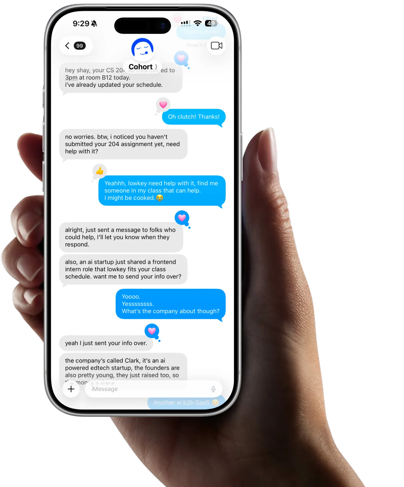

Case study / 004
Building Cohort: a waitlist page that reads like a letter
Cohort is an AI assistant for university students that lives in iMessage. Before it existed, this page had to make students feel the overload and leave their email. It does it in 4 paragraphs.

01
Intro
Cohort is, in the page's own words, "the friend who knows you and everyone, remembers everything, and handles the parts of university you shouldn't have to think about." It lives in your messages. It stays ahead of deadlines, books office hours before they fill up, and makes the right introductions.
When this page went up in June 2026, the product wasn't ready to show. So the page couldn't demo features. It had to sell a feeling, and then ask for one thing: your university email.
Every email that comes in is checked and saved once, however many times someone presses the button.
The waitlist. Cohort's waitlist reached 2,083 students.
02
10 chapters, 4 paragraphs
The original brief planned a 10 chapter scroll story. Each chapter got its own screen. The colour moved from near black to Cohort blue and back, like the lights changing in a theatre. The centrepiece was a pinned "Tuesday timeline": one second year's morning, told as 5 notification cards piling up over a scroll track 5 to 6 screens long.
What shipped is 4 paragraphs. Almost every chapter survived, but as a phrase, and the detail moved inside the words, so you only get the depth you reach for. Scroll through the chapters and watch where each one ended up.
They said University would be some of the best years of your life - the people you'd meet, the memories you'd create, and the opportunities you'd find. But nobody spoke about how overwhelming it is. - Deadlines, Apps, Emails, Events, Group chats, Calendars, Classes - all scattered across systems that were never designed to work together. Not anymore.
Meet Cohort, the friend who knows you and everyone, remembers everything, and handles the parts of university you shouldn't have to think about. It lives in your messages, helping you stay ahead of deadlines, book office hours before they fill up, coordinate meetings, discover opportunities, and connect with the right people at the right time.
Built by students - two students, Seyi and Saleena, who wanted a better way to manage university and find the right people along the way - for students.
Join 2000+ students already on the list. Launching at your campus this Fall.
Ch 1 · The Promise kept
Ch 1 · The Promise
Brief: "they said this would be the best years of your life." Now the first sentence, and "best years" is a chip that opens into the people, the memories and the opportunities.
Ch 2 · The Truth
Brief: "nobody tells you that you can be surrounded by people and still feel alone." Its first word stayed. The rest became "nobody spoke about how overwhelming it is."
Ch 3 · The Tuesday Morning
Brief: a pinned track where 5 notification cards pile up, from Canvas at 8am to a watch party you'd miss. Now one chip. Open "overwhelming" and 7 words appear, each with its own effect.
Ch 4 · The Turn
Brief: "not anymore." on a blue panel wiping up over the dark. Now the last 2 words of that reveal. No wipe.
Ch 5 · Introducing Cohort
Brief: "meet cohort. the friend who knows everyone, remembers everything, and actually has your back." Kept nearly word for word, with a chip on the name.
Ch 6 · It Handles the Boring Stuff
Brief: a phone streaming office hours and an overdue assignment. Now one clause about deadlines, office hours and meetings. The phone moved to the top of the page.
Ch 7 · It Connects You
Brief: friends who are into gaming, a hackathon team, an internship. The gaming request now scrolls inside "messages", and opportunities and people are chips.
Ch 8 · The Feeling
Brief: "nobody should have to do this alone." Cut.
Ch 9 · The Founders
Brief: 2 founder cards. Now a chip, "Built by students", that opens into 2 names with photos.
Ch 10 · CTA
Brief: "join 2,083 students already on the list. launching at 5 campuses this autumn." Now 2000+, and the 5 campuses became a blank you fill in.
Also cut. The dark to blue act changes, the deck's yellow, and the DM Serif and Syne pairing the brief suggested. The letter is set in Century Old Style instead, with PP Neue Montreal for the small UI and Caveat on the sticky notes.
03
The light follows your clock
The page reads your clock and picks one of 4 times of day: morning from 5am, day from 10am, evening from 5pm and night from 9pm. Each one is a set of colour variables on the html element, so changing one attribute re-themes the paper, the ink, the chips and the particles together, over 1.1 seconds.
The lamp in the top corner changes it by hand. It's an SVG pendulum: a shade, a cord drawn as one curve, and a ball on the end. Click the ball and the bulb switches on, with a click made from noise. Drag it down more than 26 units and let go, and the page moves to the next time of day and throws 28 sparks.
The lamp below runs the site's code with its numbers. Pull it and this page changes with it.
- θ 0.0°
- ω 0.00 rad/s
- pull 0.0 / 26
- GRAV 220
- L 45
- DAMP 0.984
- bulb off
The swing. With gravity at 220 and a cord 45 units long, a full swing takes about 2.9 seconds. Damping of 0.984 a frame makes each swing about half as wide as the one before.
04
Words that open
The grey pills in the letter are chips. Click one and it opens into more of the sentence. Opening text in the middle of a paragraph makes everything under it jump, so the page measures the paragraph's height before and after, pins it at the first number, and animates it to the second while the new words fade in. The text reflows once, in one movement.
How long that takes depends on how far it has to go: 0.32 seconds, plus a second for every 1,500 pixels, capped at 0.6. Opening eases out. Closing eases in and out, and keeps the words on screen until the height has finished shrinking.
They said University would be some of the of your life - the people you'd meet, the memories you'd create, and the opportunities you'd find. But nobody spoke about how it is. - Deadlines, , Emails, Events, Group chats, Calendars, Classes - all scattered across systems that were never designed to work together. Not anymore.
Meet - a proactive AI assistant that coordinates student life across a shared network, the friend who knows you and everyone, remembers everything, and handles the parts of university you shouldn't have to think about. It lives in your , helping you stay ahead of deadlines, book office hours before they fill up, coordinate meetings, discover - internships, events, and communities that fit you show up in your DMs, not buried in emails; it finds you the right rooms, projects, and , from hackathon teams to friends and roommates - just by asking, and connect with the right at the right time.
05
Each word does what it says
Inside "overwhelming" are 7 words, and most of them act out what they name. Deadlines throws sticky notes at you. Emails and Group chats burst into emoji. Calendars rains dates. Apps fans out 6 app icons. Further down, "messages" turns into a ticker of things you might ask it, and "Cohort" lifts its logo out of the sentence with a chord.
Each one is a small piece of motion with its own numbers. Pick one below to take it apart.
- dx 0px
- rotOffset 0.0°
- RADIUS 120px
- angles −75 −45 −15 15 45 75
rotOffset = clamp(dx ÷ (chip width × 2.5) × 60, −30°, 30°). Here the whole area follows your pointer, so you can push the fan all the way to the clamp.
- notes 44
- pop 0.32 to 0.54s back.out(1.7)
- fall at 1.9s + up to 0.5s
- fall 0.9 to 1.6s power2.in
- t 0.00s
- x 0px
- lap 0px
- SPEED 70px/s
- lap time 0.0s
- last gap 0ms
- logo x 0px
- rotate 0.0°
- inline logo 0px
- quickTo 0.5s power3.out
- W 160px
On a phone. There's no hover, so Apps opens on a 500 millisecond press and buzzes for 14 milliseconds when it does. Slide your finger to turn the fan.
06
The phone burns in
The site opens on the line "the social layer for student life." and the phone in Fig. 1. It doesn't fade in. A WebGL shader compares every pixel with a field of noise. As a threshold climbs, pixels whose noise is under it are drawn and the rest are thrown away. The pixels just under the threshold, a band 0.055 wide, are tinted from pale gold to deep copper, so the edge looks like paper catching.
The noise is tilted by 0.3 from top to bottom, so the bottom of the phone comes through first. The threshold closes 1.6% of the remaining distance every frame, so it moves fast at the start and slows as it arrives. Once the phone is there, it tilts toward your mouse: up to 9 degrees sideways and 5 up or down.
- row 0.62
- bias −0.186
- uProg 0.40
- drawn 0% of this row
- t 0.00s
The rule, in one line. if (n > prog) discard; Everything else in the shader is the colour of the edge.
08
Stars, embers and dust
Behind the letter is a single canvas. At night it draws 72 stars that twinkle at their own speeds, leaves sparks behind your cursor, and now and then sends a shooting star across the top of the screen. In the evening it switches to 8 embers drifting up. In the morning and the day, 11 specks of dust. In daylight hours it also lays faint bands of light across the page, tilted by the real time.
The shooting star isn't on a fixed beat. Each time one launches, the next is set for 15 seconds plus a random share of 20 more, so you can't predict it, but you never wait more than 35 seconds.
09
Sounds with no files
Every sound on the page is made in the browser with Web Audio. There are no audio files. The everyday ones, hover, tick and pop, are 1 or 2 short sine tones. The Cohort chord is 5 notes, C E G C E, each with a quiet octave above it, and a high G at the end.
The keyboard clicks behind "messages" are bursts of filtered noise with a low thump under them, fired at random gaps of 55 to 145 milliseconds, with a longer pause about 1 time in 8. The lamp's switch is the same trick: a 28 millisecond crack of noise around 1,900 hertz, a low thud, and when it turns on, a 120 hertz hum that dies away in 0.2 seconds.
10
Conclusion
Most waitlist pages try to explain the product. This one couldn't, so it did the more useful thing: it described a feeling every student already has, in 4 paragraphs, and let anyone who wanted more open the words for it. Everything else on the page, the times of day, the lamp, the sounds, is there so it feels like it was written by a person.